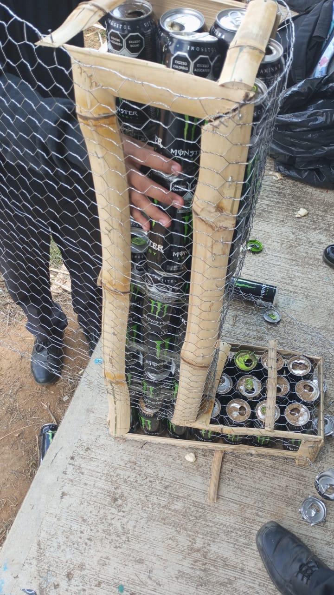
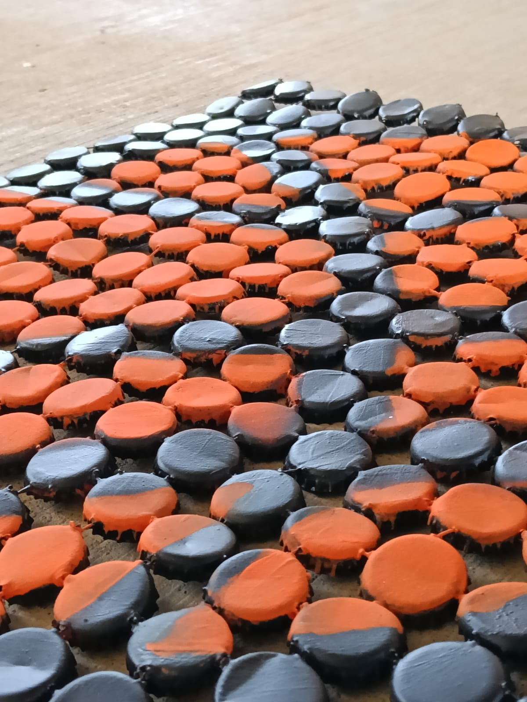
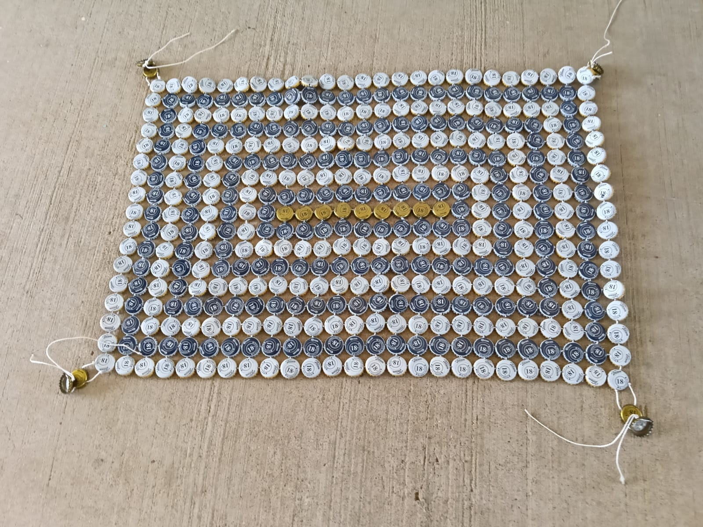

Lic. Niceforo Pérez Suárez
Tapetes de Corcholatas
Se realizó una campaña de recolección de corcholatas para crear tapetes decorativos. Los estudiantes clasificaron los materiales y diseñaron figuras coloridas.
Letras Monumentales
En conjunto con la Lic. Isis Jerónimo Ángeles se elaboraron las letras monumentales de la escuela utilizando materiales reciclados.



